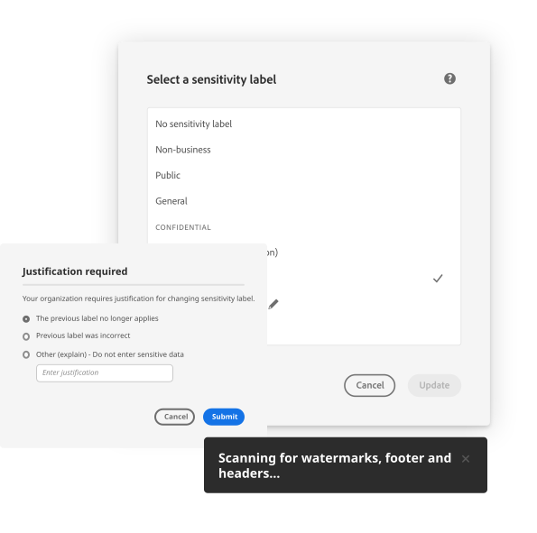
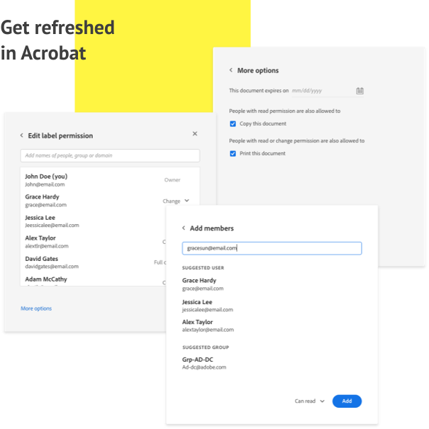
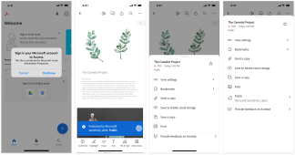
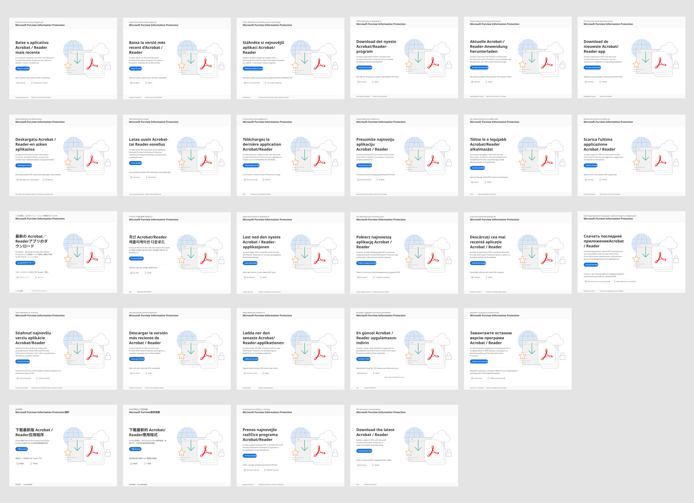

Adobe Acrobat Sign for Microsoft Teams
Make it possible to have your document signed in one collaborative place.
OVERVIEW
Adobe Acrobat Sign for Microsoft Teams
In 2017, Microsoft launched Teams as its native business communication platform, it allows people to chat, videoconferencing, managing office files within one pletform. When pandemic hits the workplace in 2019, we started this partnership with Teams and aimed to provide Adobe Acrobat Sign as an integrated eSign solution right within Teams.
Try it out in Teams🎨 Lead Designer
⏱️ Launched 2022
🏢 SMB & Enterprise customers
My Role
Lead the design conversation from zero to MVP, and continue to support on overall integration product strategy.
Experience problem
Start from the user needs
After conducting an initial audit of the current user experience and collaborating with the research team to identify fundamental user needs for this add-in, we have distilled a set of key user problems that need to be addressed in the MVP.

Default to unfamiliar chat experience
Missing onboarding or guidance for first time users
Lack of consistency with Acrobat Sign web experience
Nested tabs and inherent IA issues due to iFrame
Not optimizedfor Microsoft Teams
Limited mobile support in place
Design goal
Make Adobe Acrobat Sign for Microsoft Teams personal app a central hub for getting signatures, track agreement status and discovering Adobe Acrobat Sign value.

Enable SSO for Microsoft add-ins
For enterprise users, they can simply use their org account to use this add-in within Microsoft Teams, saving extra steps for users.
Check agreement status at a glance
In the new home tab, users will be able to check the most recent agreements and take actions directly from there, instead of redirecting to the unfamiliar chat experience.


Re-wire the navigation and IA logic
Instead of getting confused by a double layered navigation, in the new home tab, users will be able to check the most recent agreements and take actions directly from there, instead of redirecting to the unfamiliar chat experience.

Outline the experience across devices
To help engineering and product team understand how this experience would carry over to smaller screens, design team provided an experience framework/vision early on to initiate this conversation.

Scalable in different languages
To help engineering and product team understand how this experience would carry over to smaller screens, design team provided an experience framework/vision early on to initiate this conversation.

Unique challenge
Dance within the pace
How to design and lead for a good partnership experience? We started with a dated experience,[placeholder] that has been out for a while with enterprise customers, and also need to work with different engineer and product teams for difference platforms. After going through rounds of iterations. This experience was succesfully launched during Microsoft Ignite 2022 and continued to be improved until today.
Have a rationalized design POV
Designing for partnership experience often means double sized constraints: user expectations, feasibility, timeline from both products, hence it's important for the lead designer to have a solid POV based on our understanding of users and limitations. I really enjoyed the iterative process to collaborate with engineer, product, marketing and customer support from both internally and externally to build a clean experience for users.
Leveraging the resource within the design community
While designing for this project, our design team is also working on a complete revamp of the Acrobat experience, to make sure this project could be scalable in this moment of transition, I worked closely with multiple design teams to make sure all the touch points, components and workflow will be scalable in both classic and modern frameworks.
Raise the quality bar from E2E
We started this whole project with a quick sync up when the product team was still drafting out the roadmaps. As we dive deeper, I started to engage more stakeholders to this conversation to align on experience goal and key workflows. Later in the process, as we had 3 phases of releases, I managed to incorportate more feedbacks from our customers to the experience iterations.